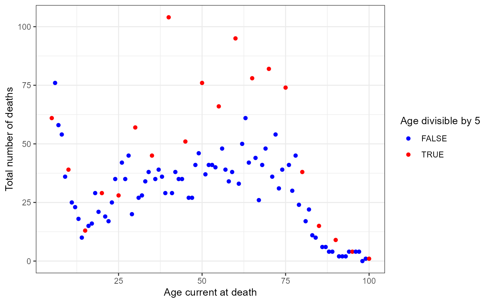

Halley's Breslau Life Table
Breslau.RdEdmond Halley published his Breslau life table in 1693, which was arguably the first in the world based on population data. David Bellhouse (2011) resurrected the original sources of these data, collected by Caspar Neumann in the city of Breslau (now called Wroclaw), and then reconstructed in the 1880s by Jonas Graetzer, the medical officer in Breslau at that time.
The dataset here follows Graetzer, and gives the number of deaths
at ages 1:100 recorded in each of the years 1687:1691. Halley's analysis was based on the total
over those years.
Usage
data("Breslau")Format
A data frame with 100 observations on the following 8 variables. The yearXXXX variables give the number of deaths for persons of a given age recorded in that year.
agea numeric vector
year1687a numeric vector
year1688a numeric vector
year1689a numeric vector
year1690a numeric vector
year1691a numeric vector
totala numeric vector
averagea numeric vector
Source
Bellhouse, D.R. (2011), A new look at Halley's life table. Journal of the Royal Statistical Society: Series A, 174, 823-832. doi: 10.1111/j.1467-985X.2010.00684.x
References
Halley, E. (1693). An estimate of the degrees of mortality of mankind, drawn from the curious tables of births and funerals in the City of Breslaw; with an attempt to ascertain the price of annuities upon lives. Phil. Trans., 17, 596-610.
Examples
data(Breslau)
# Reproduce Figure 1 in Bellhouse (2011)
# He excluded age < 5 and made a point of the over-representation of deaths in quinquennial years.
library(ggplot2)
library(dplyr, warn.conflicts = FALSE)
Breslau5 <- Breslau %>%
filter(age >= 5) %>%
mutate(div5 = factor(age %% 5 == 0))
ggplot(Breslau5, aes(x=age, y=total), size=1.5) +
geom_point(aes(color=div5)) +
scale_color_manual(labels = c(FALSE, TRUE),
values = c("blue", "red")) +
guides(color=guide_legend("Age divisible by 5")) +
theme(legend.position = "top") +
labs(x = "Age current at death",
y = "Total number of deaths") +
theme_bw()
